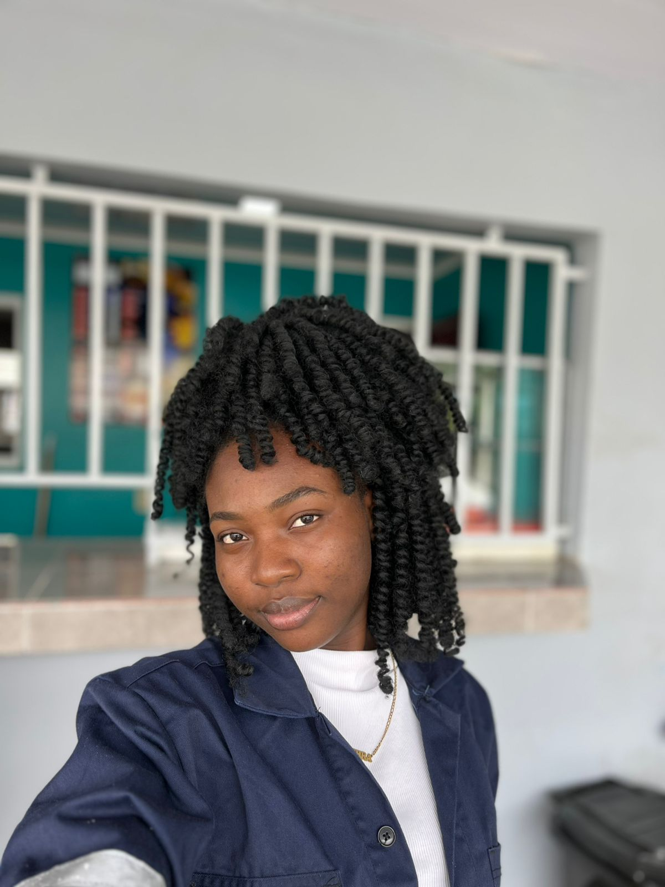

About Me
Ik ben geboren en opgegroeid in het binnenland van Suriname, waar ik mijn lagere school heb gevolgd op de Princess Beatrixschool op Stoelmanseiland en daarna mijn MULO-opleiding heb afgerond. In 2018 ben ik naar de stad verhuisd om mijn studie voort te zetten. Ik heb een schakeljaar gevolgd aan de LTS en vervolgens mijn opleiding Electro-Informatieoverdracht afgerond aan NATIN. Momenteel studeer ik Bedrijfskunde Informatica aan UNASAT. Daarnaast ben ik inmiddels twee jaar werkzaam bij N.V. EBS, waar ik mij bezighoud met technische administratieve werkzaamheden, waaronder het valideren van grootverbruik meterstanden. Deze functie heeft mij geholpen om nauwkeurig te werken, verantwoordelijkheid te nemen en mijn technische kennis verder te ontwikkelen. Mijn achtergrond heeft mij gevormd tot een zelfstandige en doorzettingsgerichte persoon die altijd blijft streven naar groei en ontwikkeling. .